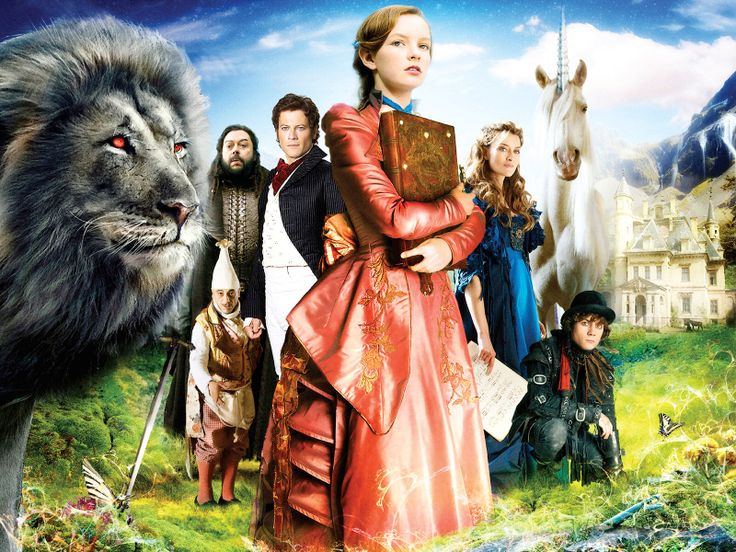

<doctype html>
    <html>
        <meta <charset="utf-8">
        <title></title>
        
    </head>
    <body>
        <header>
                  <h1>Тайна Мунакра</h1>
          </header>
          <div>
              <nav>
                   <ol>
                      Данный фильм рассказывает нам о загадочной истории долины Мунакра. Главная героиня - Мария Меривезер, после смерти отца вынуждена переехать к своему дяде, так как их дом в Лондоне оказался проигран в карты. В наследство девочка получила лишь книгу, содержащую легенды Мунакры. Сможет ли она разгадать все загадки и предотвратить гибель долины?
                    </ol>
                </nav>
                <main>
                Жанры: фэнтези, мелодрама, приключения, семейный
                <main>
                 Дата выхода: 6 сентября 2008
                 <main>
                 Режиссер: Габор Чупо
                 <main>
            </div>
    </body>
</html>